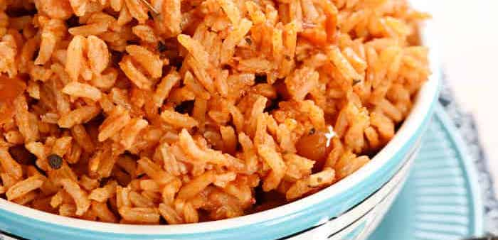

Spanish Rice
 6
servings
6
servings 25
minutes
25
minutes- Source
 Vegetarian
Vegetarian
Quick and easy rice.

1 cupwhite rice1 cupwater1 cuptomato sauce1 ½ tspchili powder1 tspcumin½ tspgarlic salt½ tsptsp dried oregano
Ingredients
Add all ingredients into a medium saucepan and give it a stir. Turn heat to high and bring to a boil, stirring occasionally.
Stir well, reduce heat to low, place lid on pot, and cook at a gentle simmer for
20 minutes(or whatever amount of time is directed on your bag of rice; see NOTES below).
If rice is not quite tender or liquid is not absorbed after
20 minutes, replace lid and cook for2 - 4 minuteslonger. Remove from heat, leave covered, and allow to rest for a few minutes. Fluff rice with a fork and serve.